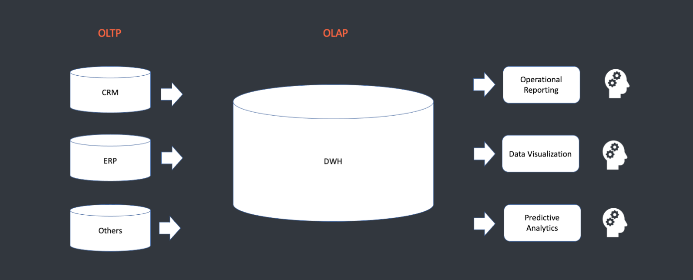
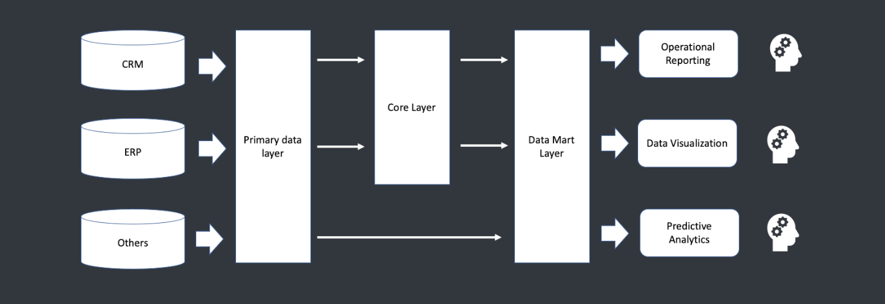
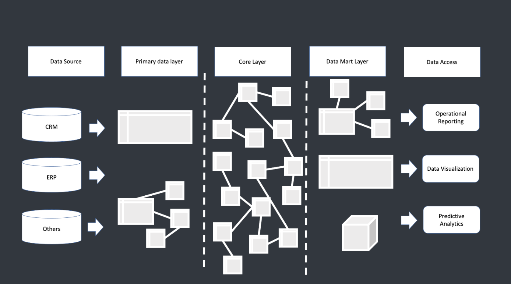
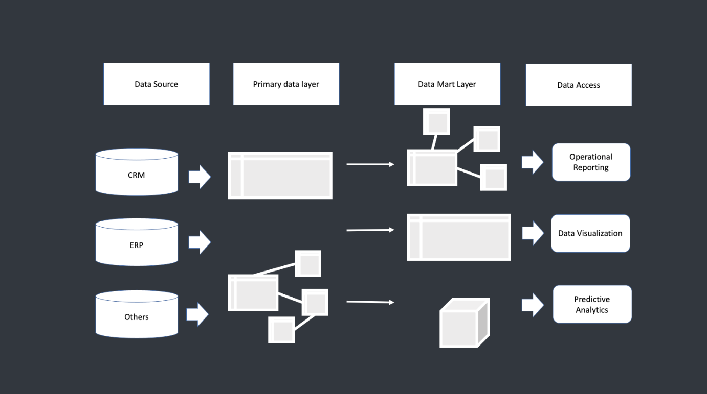
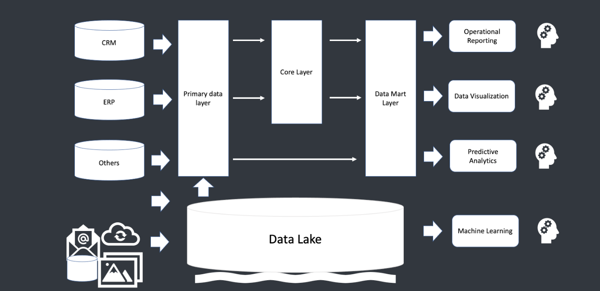
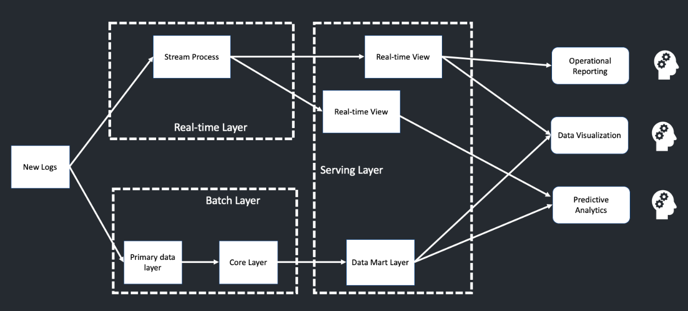
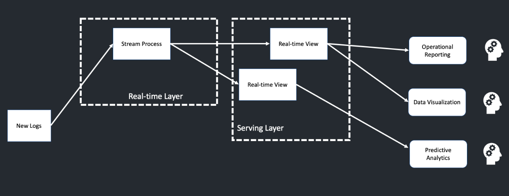

HalltapeRoadmapDE
Теория по DWH: - Data Warehouse - OLTP-системы - OLAP-системы - Архитектура DWH - Подходы к проектированию DWH - Озеро данных - Batch-обработки и Lambda-архитектуры - Kappa-архитектура
Data Warehouse

OLTP-системы
OLTP (Online Transaction Processing) - система оперативной обработки информации (транзакций).
Транзакция - некоторый набор операций над базой данных, который рассматривается как единое целое. Транзакцией может являться несколько операций, но они обязательно выполняются все вместе; часть операций отдельно выполниться не может.
Главное требование к OLTP-системам
- Быстрое обслуживание относительно простых запросов большого числа пользователей.
- Время выполнения запроса не должно превышать (микро-, милли-)секунд.
OLAP-системы
При создании систем поддержки принятия решений специалисты столкнулись с проблемами при использовании OLTP-систем. Это привело к появлению OLAP-систем.
OLAP (Online Analytical Processing) имеет дело с историческими или архивными данными. OLAP характеризуется относительно низким объемом отдельных запросов.
Запросы часто очень сложны и включают много таблиц. В многомерных схемах хранятся агрегированные исторические данные OLAP.
Сравнение OLAP и OLTP систем
OLAP и OLTP системы имеют ряд принципиальных отличий и разное предназначение в рамках организации хранилища данных. OLAP-системы должны быть организованы иначе, чем OLTP-системы, и для этого существует несколько причин:
- Для выполнения аналитических запросов необходима обработка информации из разных источников.
- Для выполнения запросов, связанных с прогнозированием или анализом тенденций, необходимы исторические данные, накопленные за достаточно длительный период, что не всегда обеспечивается OLTP-системами.
- Данные, используемые для целей анализа данных обслуживания аналитических запросов, отличаются от используемых в OLTP-системах. При аналитической нагрузке можно пользоваться не детальными, а предагрегированными данными.
Сравнение OLAP и OLTP систем
| Параметр | OLAP-системы | OLTP-системы |
|---|---|---|
| Степень детализации | Хранение детализированных и обобщенных (агрегированных) данных | Хранение детализированных данных |
| Формат хранения | Единый согласованный | Варьируется от задач |
| Допущение избыточности | Контролируемая избыточность | Максимальная нормализация, сложные структуры |
| Управление данными | Периодическое добавление данных | Добавление/удаление/изменение в любое время |
| Количество хранимых данных | Должны быть доступны все данные, включая исторические | Должны быть доступны все оперативные данные |
| Характер запросов к данным | Произвольные запросы (ad-hoc анализ данных) | Заранее составленные запросы |
Архитектура DWH

Первичный слой данных
Операционный слой первичных данных (Primary Data Layer, raw или staging) – это уровень, на котором выполняется загрузка информации из систем-источников в исходном качестве с сохранением полной истории изменений. На этом слое происходит абстрагирование следующих слоев хранилища от физического устройства источников данных, способов их сбора и методов выделения изменений.
Центральный слой данных
Ядро хранилища (Core Data Layer) – центральный слой, в котором происходит консолидация данных из разных источников, приводя их к единым структурам и ключам. Здесь осуществляется основная работа с качеством данных и трансформациями, чтобы абстрагировать потребителей от особенностей логического устройства источников данных и необходимости их взаимного сопоставления.
Слой витрин данных
Слой аналитических витрин (Data Mart Layer) – уровень, где данные преобразуются в структуры, удобные для анализа и использования в BI-дэшбордах или других системах-потребителях. Витрина данных (Data Mart) представляет собой срез хранилища данных в виде массива тематической, узконаправленной информации, ориентированной, например, на пользователей одной рабочей группы или департамента.
Подходы к проектированию DWH
В зависимости от наличия центрального слоя существует два основополагающих подхода:
DWH – это корпоративное централизованное хранилище данных
DWH по Инмону
- Проектирование ХД модели “сверху вниз”.
- Тщательный анализ бизнеса в целом.
- Выявление бизнес-областей.
- Определение ключевых бизнес-сущностей.
- Определение их характеристик (атрибутов) и связей между ними.
В результате анализа появляется понимание, какие сущности участвуют в бизнес-процессах и как они взаимодействуют друг с другом.
Пример DWH по Инмону

Преимущества: 1. «Единая версия правды». 2. Отсутствие противоречивости в данных. 3. Детальный слой содержит проекцию бизнес-процессов. 4. Легкость поддержки при увеличении количества источников.
Недостатки: 1. Сложность в проектировании, требуется высококлассная команда. 2. Долгая реализация на первоначальном этапе анализа бизнеса.
DWH по Кимбаллу
DWH по Кимбаллу – это копия транзакционных данных, специально структурированных для запроса и анализа в виде витрин данных. Хранилище по Кимбаллу можно назвать коллекцией витрин данных (отчетов).
Проектирование снизу вверх: 1. Анализ потребностей – определение необходимых отчетов. 2. Анализ источников – идентификация доступных данных. 3. Проектирование витрины под конкретного потребителя. 4. Преобразование первичных данных из источников в витрины.
Пример DWH по Кимбаллу

Преимущества: 1. Быстрый эффект. 2. Достаточно поэтапного анализа бизнес-областей. 3. Не требуется высококвалифицированных специалистов (на старте).
Недостатки: 1. Высокая стоимость поддержки новых источников. 2. Отсутствие стандартизации показателей (в каждой витрине может быть свой алгоритм).
ACID
Часто спрашивают на собесах про ACID! Прочитай, пожалуйста, что это и зачем оно нужно...
Теория, без которой не получишь оффер
Озеро данных
Озеро данных (Data Lake) – это хранилище большого объема неструктурированных данных, собранных или генерированных одной компанией. В таком подходе в озеро данных поступают все данные, которые собирает компания, без предварительной очистки и подготовки.
Примеры данных: - Видеозаписи с беспилотников и камер наружного наблюдения. - Транспортная телеметрия. - Фотографии. - Логи пользовательского поведения. - Метрики сайтов. - Показатели нагрузки информационных систем и пр.
Эти данные пока непригодны для типового использования в ежедневной аналитике в рамках BI-систем, но могут быть использованы для быстрой отработки новых бизнес-гипотез с помощью ML-алгоритмов.
Основные особенности использования подхода:
- Хранятся все данные, включая «бесполезные», которые могут пригодиться в будущем или не понадобиться никогда.
- Структурированные, полуструктурированные и неструктурированные разнородные данные различных форматов: от мультимедийных файлов до текстовых и бинарных из разных источников.
- Высокая гибкость, позволяющая добавлять новые типы и структуры данных в процессе эксплуатации.
- Из-за отсутствия четкой структуры необходима дополнительная обработка данных для их практического использования.
- Озеро данных дешевле DWH с точки зрения проектирования.
Преимущества озера данных:
- Масштабируемость: распределенная файловая система позволяет подключать новые машины или узлы без изменения структуры хранилища.
- Экономичность: Data Lake можно построить на базе свободного ПО Apache Hadoop, без дорогих лицензий и серверов.
- Универсальность: большие объемы разнородных данных могут использоваться для различных исследовательских задач (например, прогнозирование спроса или выявление пользовательских предпочтений).
- Быстрота запуска: накопленные объемы Data Lake позволяют быстро проверять новые модели, не тратя время на сбор информации из различных источников.
Ниже можно увидеть архитектуру Data LakeHouse. Она сочетает в себе Data Lake и DWH идеи 
Болото данных
У подхода Data Lake есть обратная сторона - болото данных, когда данные собираются, хранятся и не используются.
Причины этого: 1. Низкое качество данных из-за отсутствия контроля при загрузке и дешевого хранения информации. 2. Сложность определения ценности данных: философия Big Data предполагает важность любой информации, но если бизнесу нужны данные, эта информация логично загружается сразу в DWH или витрину BI-системы.
Batch-обработки и Lambda-архитектуры
На всех графиках мы используем стрелочки для описания перехода данных. Каждая отдельная стрелочка - это ETL процесс. ETL - это процесс преобразования данных, который состоит из:
- Извлечение данных (Extraction - E) - из одного или нескольких источников и подготовка их к преобразованию (загрузка в промежуточную область, проверка данных на соответствие спецификациям и возможность последующей загрузки в ХД);
- Трансформация данных (Transform - T) - преобразование форматов и кодировки, агрегация и очистка;
- Загрузка данных (Load - L) - запись преобразованных данных, включая информацию о структуре их представления (метаданные), в необходимую систему хранения (КХД) или витрину данных.
Существует также ELT подход. ETL и ELT — два разных способа загрузки данных в хранилище.
ETL (Extract, Transform, Load)
ETL сначала извлекают данные из пула источников данных. Данные хранятся во временной промежуточной базе данных. Затем выполняются операции преобразования, чтобы структурировать и преобразовать данные в подходящую форму для целевой системы хранилища данных. После этого структурированные данные загружаются в хранилище и готовы к анализу.
ELT (Extract, Load, Transform)
В случае ELT данные сразу же загружаются после извлечения из исходных пулов данных. Промежуточная база данных отсутствует, что означает, что данные немедленно загружаются в единый централизованный репозиторий. Данные преобразуются в системе хранилища данных для использования с инструментами бизнес-аналитики и аналитики.
Пакетная обработка
ETL процесс может быть разным в зависимости от типа данных, которые в него передаются. В пакетной обработке данных существует разбиение данных по каким-либо диапазонам, обычно по временным диапазонам. В таком подходе данные обычно доставляются с задержкой. Для пакетной обработки характерны простая (относительная) разработка и тестирование, а также высокая эффективность для OLAP-систем и высокая пиковая нагрузка на железо.
Пакетная обработка - классический подход в построении DWH. Обычно хранилище данных строится за t−1, то есть данные в хранилище актуальны за вчерашний день. Пакетная обработка может быть и за последний час, и за предыдущие полчаса; это зависит от частоты жизни хранилища данных.
Потоковая обработка
Потоковая обработка - сервис обрабатывает и загружает весь поток информации, результат получается в режиме реального времени. Потоковая обработка сложнее в разработке и тестировании (относительно) чем пакетная. Для нее характерны низкая эффективность для OLAP-систем и равномерная нагрузка на железо.
Lambda-архитектура
Если мы объединим потоковую и пакетную обработку, то получим Lambda-архитектуру. У Lambda-архитектуры очень простой подход: мы делим общий поток данных на два потока. Первый поток — это пакетная обработка (Batch layer), а второй поток — это потоковая обработка (Real-time layer).
В Batch layer представлены Primary data layer и Core layer из классического DWH. Затем данные из Batch layer попадают в Serving layer, где находится витрина данных. В Real-time layer появляются представления Real-time View, которые попадают в Serving layer и к которым могут обращаться аналитики.
У Lambda-архитектуры есть свой минус: нам необходимо дублировать логику в оба потока обработки данных. Если нам не нужна пакетная обработка, мы можем убрать её из архитектуры.

Kappa-архитектура
Kappa-архитектура — это архитектура только потоковой обработки данных. При этом есть возможность сохранять данные из Serving layer в долговременное хранилище.
